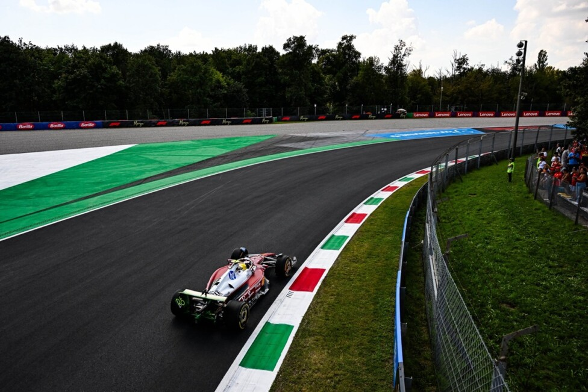
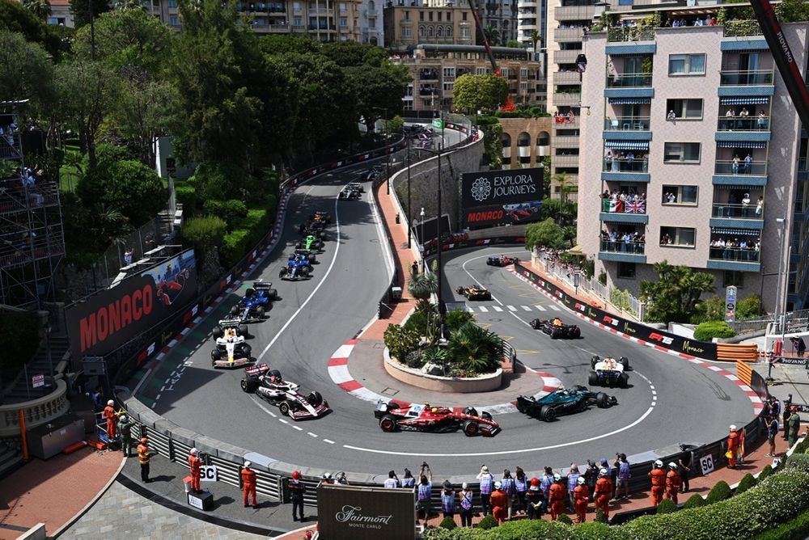
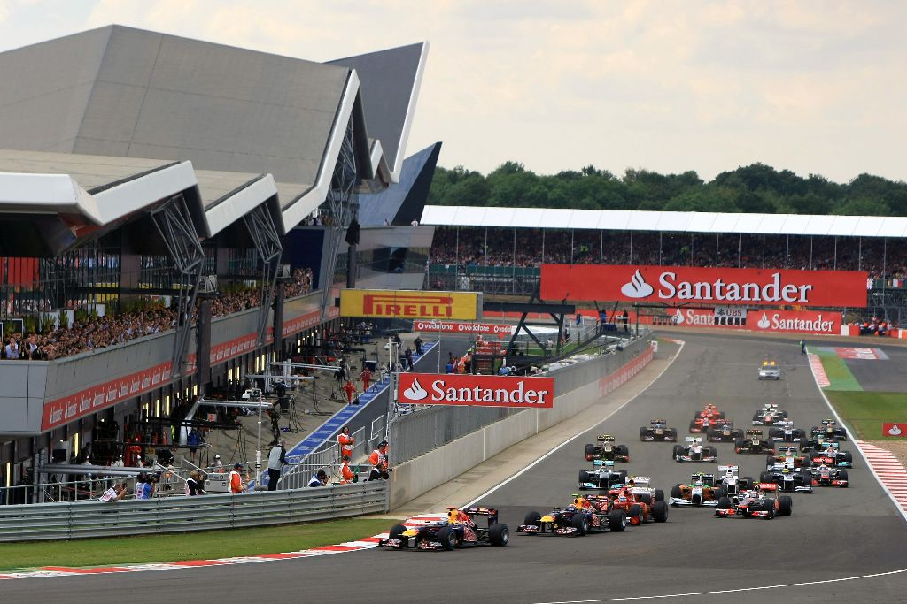

Circuitos
Cada temporada la Fórmula 1 recorre circuitos de distintos continentes. Algunos son clásicos permanentes, como Monza, Silverstone, Spa-Francorchamps o Suzuka. Otros son callejeros, como Mónaco, Singapur o Las Vegas. Cada pista pide una puesta a punto diferente: más velocidad máxima en las rectas largas o más carga aerodinámica en las zonas lentas y sinuosas.
Monza — Italia

Nombre: Autodromo Nazionale di Monza
País: Italia 🇮🇹
Longitud: 5,793 km
Vueltas: 53
Curvas: 11
Gran Premio: Italia 🇮🇹
El circuito de Monza es uno de los más antiguos y famosos de la Fórmula 1. Fue inaugurado en 1922 y forma parte del campeonato mundial desde su primera temporada, en 1950, con algunas excepciones.
Es conocido como "El Templo de la Velocidad" debido a sus largas rectas y a las altas velocidades que alcanzan los monoplazas. Los pilotos pasan gran parte de la vuelta acelerando y utilizando configuraciones aerodinámicas que favorecen la velocidad máxima.
Entre sus sectores más conocidos se encuentran la Variante del Rettifilo, las Lesmo, la Ascari y la famosa curva Parabolica.
Mónaco — Montecarlo

Nombre: Circuito de Mónaco
País: Mónaco
Longitud: 3,337 km
Vueltas: 78
Curvas: 19
Gran Premio: Mónaco
El Gran Premio de Mónaco es una de las carreras más famosas y tradicionales de la Fórmula 1. Se disputa en las calles de Montecarlo y combina zonas urbanas, curvas muy cerradas y muy poco espacio para cometer errores.
A diferencia de otros circuitos, los pilotos corren prácticamente entre edificios, paredes y barreras de protección. Por eso, la precisión y la concentración son fundamentales.
Algunas de sus curvas y sectores más conocidos son Mirabeau, Casino, Loews, el túnel y la chicane del puerto.
Silverstone — Reino Unido

Nombre: Silverstone Circuit
País: Reino Unido
Longitud: 5,891 km
Vueltas: 52
Curvas: 18
Gran Premio: Gran Bretaña
Silverstone es uno de los circuitos más importantes de la historia del automovilismo. Se encuentra en Inglaterra y fue construido sobre una antigua base aérea utilizada durante la Segunda Guerra Mundial.
En 1950, Silverstone fue escenario del primer Gran Premio del Campeonato Mundial de Fórmula 1. Desde entonces se convirtió en uno de los circuitos más tradicionales del calendario.
Es conocido por sus curvas rápidas y desafiantes, especialmente Copse, Maggots, Becketts y Chapel. El circuito requiere autos con un buen equilibrio entre velocidad máxima y carga aerodinámica.